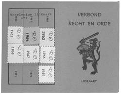

> nieuwsbrief > 2024 - nr 1
Inhoud
Kaftillustratie: de Standaard van
de Dietse Rijksorde Joris van Severen.
Hernieuwen ledenbijdrage voor 2024
We wensen onze
lezers een voorspoedig en gelukkig 2024. De jaarwisseling heeft zich
inmiddels voltrokken – en meteen is ook het tijdstip
aangebroken voor het hernieuwen van de bijdragen voor 2024.
Ten gevolge van de alweer gestegen druk- en portkosten dienen
we de minimumbijdrage licht te verhogen tot 35 €. In ruil
daarvoor verzekeren we u de stipte toezending van het nieuwe Jaarboek Joris van
Severen – het 28e al – in de
meimaand en van de vier nummers van ons kwartaalblad Nieuwsbrief Joris van
Severen. Vanaf het bedrag van 40 €
boeken we u met dank als steunend lid. Vereffening graag via
onze rekening BE29 4650 2267 2164 op naam van het
Joris van Severen Instituut, Izegem.
Jaarboek Joris van Severen 28 (2024)
Verderop in dit nummer leest u alvast iets over de inhoud
van het nieuwe jaarboek. Ook het kaftje van dit nummer verwijst
naar een van de jaarboekbijdragen.
Hier Dinaso!
Langs de volgende
koppeling kan je de volledige reeks van Hier Dinaso!
chronologisch bekijken: https://www.delpher.nl/nl/tijdschriften/results?query=&page=1&sortfield=date&cql%5B%5D=(alternative+all+%22hier+dinaso%22)&coll=dts
“De betwiste leider”
Verderop in dit
nummer leest u een bijdrage met deze titel, ontleend aan de ADVN
Mededelingen. Het betreft het voormalige Verbond Recht en
Orde – en zijn leider - één van de vele neo-Dinaso-bewegingen
die aanvang de jaren ’60 van de vorige eeuw actief waren. De
daarbij gebruikte archiefstukken behoren tot het binnen het
Studiecentrum Joris van Severen verzamelde materiaal dat
overgedragen werd aan het ADVN.
Ten geleide Jaarboek 27 (2024)
Met deze
aflevering zijn we aan het 28e Jaarboek Joris van Severen
toe. We brengen andermaal een ruime verscheidenheid aan
bijdragen die op een of andere wijze inzoomen op de ondertitel
van deze reeks: Joris van Severen, zijn persoon, zijn
ideeën, zijn invloed en zijn werk.
Vooreerst rondt
Romain Vanlandschoot met De Sisyphus-arbeid
van Joris van Severen zijn verfijnde biografie
over Van Severen af met de periode 26 mei 1929 – 6 oktober
1931, zijnde de periode direct voorafgaand aan de stichting
van het Verdinaso. Daarbij komt ook de kritiek van o.m.
Hendrik Elias op Van Severens evolutie richting fascisme
volop aan bod. Tien jaar later, aan de vooravond van de
Tweede Wereldoorlog, zag het ideologische plaatje er
helemaal anders uit: de tegenstrevers uit het
Vlaams-nationalistische kamp beleden toen al lang het
nationaal-solidarisme, dat ze even later gedachtenloos (?)
zouden omruilen voor de ersatz van het nationaalsocialisme.
In A.Th.L.M. Mertens, van Dinaso-student
tot rector magnificus besteedt Ruud
Bruijns uitgebreid aandacht aan de levensloop van deze
Noord-Nederlandse Dinaso en zijn wel merkwaardig te noemen
levensloop. Eens temeer blijkt daaruit hoezeer het
Verdinaso-Nederland vooral in intellektuele kringen bijval en
navolging vond.
In zijn essay
over het maandblad Delta, verderop in dit jaarboek,
besteedt Hans Nelis uitgebreid aandacht aan de Dietse
Rijksgedachte zoals deze door het vernoemde maanblad uitgedragen
werd. In de tijd eraan voorafgaand bestond er, al evenzeer als
neo-Dinaso-initiatief, de Dietse
Rijksorde Joris van Severen, waarover Luc
Pauwels de sluiter oplicht. Slechts weinigen hadden weet
van haar bestaan, behalve de auteur, die er destijds lid van
was.
Hans Nelis brengt in “Joris
van Severen taai in ere gehouden”. De
Werkgroep/Werkgemeenschap ’Delta’ – ‘De Lage Landen’
andermaal
een overzichtsgeschiedenis van een als neo-Dinaso te
kwalificeren initiatief, met name het tijdschrift Delta.
In Motieven maandschrift
‘Delta’ doorheen de jaren poogt Maurits Cailliau tot een synthese te komen
van wat in Delta maat- en normgevend was doorheen de
lange geschiedenis van dit tijdschrift.
In Een onbekend beeldhouwwerk van Antoon van
Parys besteedt Maurits Cailliau aandacht
aan een merkwaardig beeldhouwwerk van de succesvolle beeldhouwer
uit Deinze: een ‘kop’ die onmiskenbaar doet denken aan Joris van
Severen, alhoewel d beeldhouwer het de naam ‘Mannenkop met
uil’ gaf.
Maurits Bilcke
sluit het jaarboek af met zijn gedicht 49
jaar Nadien. Een beklijvend getuigenis van
een oud-Dinaso en veelzijdig kunstenaar, opgedragen aan Jef
Werkers.
Sjors
Remmerswaal
Het boek is een
degelijke weergave van het leven van nationalistisch politicus
Arnold Meijer, zonder veel in te gaan op zijn ideologische
ontwikkelingen, een tour langs persoonlijke levensfasen. Een
evenwichtige poging met een zekere distantie, waardoor er
nauwelijks eigentijdse meningen vallen die een dergelijke
beschrijving geweld aan zouden doen, zoals soms bij biografieën
van controversiële personen het geval is. Vanwege de aard van de
opzet is weinig meegenomen van de interactie of ideologische
verschillen tussen de politieke formaties in de periode dat
Meijer zelf als voorman van een fascistische beweging actief
was. Hoe in de toenmalige katholieke zuil werd aangekeken tegen
Meijer en zijn fascistische organisatie en opvattingen blijft
grotendeels in het ongewisse, hiervoor zal men zich moeten
wenden tot de bestaande literatuur.
Vorming
Zijn achtergrond
en eerste stappen in het jongvolwassen leven zijn van grote
invloed op latere politiek-maatschappelijke keuzes. Opgegroeid
in een welgestelde, rooms-katholieke boerenfamilie verhuisde
Meijer in september 1926 naar het Groot-Seminarie Warmond, waar
toen de priesters van het Bisdom Haarlem werden opgeleid. Op het
seminarie ontwaakte Meijers belangstelling voor politiek,
vermoedelijk ook de wens van Meijer een leidende rol te spelen.
De studenten kregen op het seminarie voortdurend te horen dat
zij de elite van de kerk zouden vormen, voorbestemd om leiding
te geven aan gelovigen bij wie geen twijfel mocht rijzen over
hetgeen naar voren werd gebracht. Er werd in zijn familie hoog
tegen de priesterstudent opgezien.
Meijer had veel
interesse in toneel en literatuur, met name ging de
belangstelling uit naar katholieke schrijvers in Nederland,
België en Frankrijk. Vanuit de behoefte zijn ideeën met anderen
te delen correspondeerde hij over Franse literatuur en de Action
Française. In zijn studie naar het bolsjewisme, maar door het
lezen van allerlei geschriften, raakte hij steeds meer in de ban
van het fascisme, in de jaren twintig en dertig een opkomende
politieke stroming met antwoorden op de tekortkomingen van de
parlementaire democratie. Later heeft met name de literaire
zoektocht ervoor gezorgd dat hij door onder druk van de praeses
(de overste van de katholieke priesteropleiding), zijn studies
aldaar moest stopzeten.
Buiten de
seminarie zocht hij contact met de Brabantse priester Wouter
Lutkie, die hij van zijn geschriften kende. Een sociaal bewogen
katholiek wiens dagen grotendeels waren gevuld met het redigeren
en schrijven van artikels en een van de bekendste voorvechters
van het fascisme in Nederland. Meijer kon hem openhartig zijn
politieke ideeën voorleggen. Een andere priester bij wie hij
gedurende zijn studententijd op het seminarie geestelijk steun
zocht was de Rijpweterings pastoor Thomas Kwakman, diens
opvattingen waren doorspekt met kritiek en afwijzing van de
parlementaire democratie.
Contact met Dinaso’s
Als gevolg van
Meijers positieve analyses van het opkomende fascisme werd hij
als eerste lid van de Nationale Unie, een rechtse
anti-democratische beweging. Om vervolgens betroken te raken bij
het Algemeen Nederlandsche Fascisten Bond en daar al snel
voorman van de afdelingen in het zuiden van het land te worden.
Deze afdelingen splitste de gedreven Meijer al snel af om
vervolgens zijn eigen organisatie te stichten, het Zwart Front,
een revolutionaire, fascistische beweging, die in de jaren van
bestaan vooral een rellerig en plebejisch karakter had. Waardoor
hij regelmatig voor de rechter moest verschijnen. Vanaf begin
1940 werd de organisatie omgedoopt tot Nationaal Front, met als
doel meer verbreding, ze zou uiteindelijk door de Duitse
bezetter verboden worden.
Vanaf 1934
correspondeerde Meijer met mensen uit de Vlaams-nationale
beweging. Die contacten kwamen voor een groot deel voort uit
zijn sympathie voor een Groot-Nederland, dus de hereniging van
Vlaanderen en Nederland. Veel substantieel contact was er niet
met leden van het Verdinaso. Meijer had een persoonlijk aversie
tegen Joris van Severen en hij zag hem als een concurrent, omdat
hijzelf de leider van Groot-Nederland wilde worden en Van
Severen van Dietsland.
In de publicaties
van Zwart Front en Verdinaso schilderden beide organisaties
elkaar regelmatig negatief af. Het zou dan ook nooit tot
samenwerking komen tussen beide bewegingen, laat staan tot een
fusie. Wel werden er vanaf 1 juli 1939 gesprekken gevoerd tussen
Meijer en Ernst Voorhoeve, de voorman van de Nederlandse
afdeling van het Verdinaso, maar die verliepen slecht. Meijer
was het niet eens met het voorgestelde directorium of
driemanschap, hij wilde eenhoofdige leiding met zichzelf aan de
top. Dit leidde tot een ruzie met Voorhoeve, waarna Meijer er
geen zin meer in had. Uiteindelijk fuseerde Dinaso Nederland met
de Nederlandsche Volkspartij in 1939 en ging al snel daarna op
in de Nationaal-Socialistische Beweging (NSB).
Ideeëngang
Welke
ideologische zoektochten heeft Arnold Meier ondernomen, van
katholieke boerenzoon, via het fascisme en Nederlands
nationalisme. Een eerste blik in zijn interesses komt naar voren
door onenigheden op het seminarium waaruit duidelijk wordt dat
Meijer bundels bezat als Sine Nomine van J. Engelman, ’t
Mes van E. Michel, Kruistochten van A. Donder,
Westersche Nachten van T. de Vries en Het Vaderland
van G. Wijdeveld.
Hieruit blijkt
interesse voor het toenmalige literaire en intellectuele leven,
waar vanuit de katholieke hoek opstandige, jonge schrijvers
zoals Michel en Wijdeveld kritiek leverden op de gezapig en
oppervlakkigheid van het rijke roomse leven en de katholieke
instellingen. In deze literaire stroming gingen jonge katholieke
schrijvers het debat aan met hun seculaire generatiegenoten, op
dat moment in het streng verzuilde Nederland een bijzonderheid
en een ontwikkeling die de kerkelijke autoriteiten niet wensten,
zoals wel bleek uit het conflict dat ontstond tussen Meijer en
praeses op het seminarie vanwege het lezen van deze schrijvers.
Uit
briefwisselingen met Lutkie valt bij Meijer de interesse te
ontwaren voor allerlei meer politieke geschriften, zoals de Cahiers
Leon Bloy, Restauration Francaise van A. Blanc de Saint
Bonnet, das Nachrichtenblatt über die faschistischen
Korporationen van de Italiaanse overheid en Lutkies blad Aristo.
Zijn politieke ideeën blijken hierbij aan te sluiten, namelijk
de krachteloosheid van democratie en de nefaste
gelijkheidsgedachte van het socialisme en het liberalisme
waarmee de afstand tussen de verschillende sociale groepen wordt
vergroot. Meijer wenste een grotere rol voor de godsdienst en
een autoritair geleide democratie, met een samengaan van
Nederland en Vlaanderen in een Groot-Nederland. Joden zouden
worden gescheiden van Nederlanders en een kleinere rol krijgen
door hen gastrecht aan te bieden.
Leiderschap
Kaderleden van
het Zwart Front prezen Meijers beginselvastheid, daarbij bleef
hij altijd veel waarden aan ideologie hechten en weigerde water
bij de wijn te doen, iets dat ook veel mensen juist afstootte.
Hij wordt verder gekarakteriseerd als een sterke
persoonlijkheid, een sociaal en rechtvaardig mens, met een
flinke dosis humor, bescheidenheid en mild in beoordelen van
zijn medemensen.
Gezien het gebrek
aan succes van de politieke bewegingen het Zwart Front en het
National Front, beiden zouden altijd in de marge van de politiek
blijven en zelfs klein ten opzichte van de veel grotere NSB, is
het wel duidelijk dat Arnold Meijer als leider niet is geslaagd.
Dit ondanks het in dienst stellen van zijn leven voor zijn
fascistische overtuiging, welke hij tot het einde van zijn leven
behield, maar hem bij lange na niet de volgelingen opleverde om
veranderingen te bewerkstellen.
Een zeker
obstakel was wel dat Meijer zichzelf als de uitverkoren leider
zag, niemand naast zich duldde en daarom alle mogelijke fusies
met andere groeperingen mislukten. Ook hield hij binnen zijn
eigen organisaties overal de vinger aan de pols en hij was veel
te veel met de kleinere aangelegenheden bezig. Deze werkwijze
heeft hem na zijn politieke carrière wel succes opgeleverd toen
hij als ondernemer een hotel en bungalowpark uit de grond
stampte, een bedrijf dat tot op de dag van vandaag nog bestaat.
In het boek komt
Arnold Meijer naar voren als een idealist, gegrepen door de
fascistische politieke stroming in een chaotische tijd van het
interbellum in Europa, met welke ideeën hij hoopte ‘alles voor
het vaderland’ ten goede te veranderen, uiteindelijk met een
zeer pover resultaat.
__________________
N.a.v. André van Noort,‘Storm op den Staat!’ Arnold Meijer
(1905-1965). Uitgeverij Verloren, 257
bladzijden, € 25,-, isbn 9789464550221
Hans Nelis
Een netwerker is
iemand die “contacten legt en onderhoudt”. In het Liber
amicorum komt Maurits Cailliau naar voren als iemand die
aan deze omschrijving beantwoordt. Tijdens mijn onderzoek ter
voorbereiding van de essays over de Dietse
Solidaristische Beweging (DSB) (Jaarboek 26) en de
Solidaristische
Beweging (SB) (Jaarboek 27), stootte ik in het
ADVN op enkele brieven die aantonen dat Maurits contact had met
de (D)SB voorman Maarten van Nierop en hem via zijn netwerk een
belangrijke dienst bewees. Maurits had Van Nierop voor het eerst
ontmoet op een Joris van Severen-herdenking in mei 1972. Ze
hadden “een haastig gesprek” gehad maar verder contact
was nadien niet meer onderhouden. Twee jaar later, op 15
december 1974, ontving Michel Nyckees, de penningmeester van de
DSB, vanuit Duitsland van Maurits een interessant document: een
(in het Duits opgesteld) Solidaristisch Manifest1
dat uitging van de Aktion Neue Rechte (ANB).2
De ANB was een afsplitsing van de NPD, de Nationaldemokratische
Partei Deutschlands, en bestond van 1972 tot 1974. Op 7
januari 1974 stuurde Maarten van Nierop een bedankingsbrief aan
Maurits. Van Nierop was zelf een groot netwerker die
koortsachtig zocht naar verenigingen van gelijkgezinden (op
solidaristische basis) in Europa. De DSB onderhield nauwe
contacten met het Mouvement
Solidariste Français maar Van Nierop had “tot dusver
vruchteloos naar het bestaan van een geestverwante groep in
Duitsland gezocht”. Hij was uiteraard benieuwd via welk
netwerk Maurits dit voor hem klaar gespeeld had. Die antwoordde
prompt, op 9 Januari 1974:
“Hoe ik aan
dat Duitstalig Solidaristisch Manifest kwam is gauw verteld.
In de tijd van het Blauwvoetjeugdverbond hadden wij regelmatig
contact met de Bund Heimattreuer Jugend. Uit die contacten
zijn wederzijds vriendschapsbanden gegroeid. Een vriend van
mij heeft zo contact behouden met Ulrich Behrenz (uit
Hamburg). Door een toevallige samenloop van omstandigheden heb
ik Behrenz niet ontmoet. Achteraf kreeg ik evenwel inzage in
de documentatie die hij achtergelaten heeft. Daaronder het
Manifest.”
Een staaltje van
netwerking in een tijd toen digitale toepassingen nog niet
bestonden! Dat die netwerking verliep via het kanaal van de
Dietse jeugdbeweging zal bij de lezers van het Liber
amicorum geen verwondering wekken…
Dat ook de DSB in
Maurits’ netwerk een plaats(je) had is eveneens interessant. In
1972, was er wel degelijk een vervolg op de ontmoeting
Cailliau-Van Nierop geweest:
“Wel heb ik dat
jaar bezoek gekregen van Jacques uit Roeselare (zijn
familienaam ontsnapt me momenteel).”3 Bij die
gelegenheid moet er wellicht overleg geweest zijn over een
mogelijke toetreding van Maurits tot de DSB. Maurits hield de
boot echter af: “Ik meen hem toen uiteengezet te hebben dat
een intensieve inzet voor mij momenteel niet in aanmerking kan
komen, t.g. vooral van onze gezinssituatie (mijn kinderen zijn
4, 3 en anderhalf jaar oud) en bijkomend t.g.v. praktische
omstandigheden (ik beschik bv. over geen ander vervoermiddel
dan m’n fiets).”
Er was echter nog
een andere reden waarom Maurits aan de zijlijn bleef:
“Sedert ons
(inderdaad te kort) gesprek (met MvN) destijds ben ik
trouwens zowat bij de concurrentie beland: het ‘Solidaristisch
Verbond’ (SV) van formateur Arthur Raman.”
De ironie hierbij
is dat Raman in 1974 het hele jaar door verwoede pogingen deed
om tot een vereniging te komen van ‘alle’ solidaristen, met in
de eerste plaats…de DSB van Maarten van Nierop! In dat jaar
publiceerde Maurits twee artikelen (Jeugdproblematiek, Jeugd
en Kontestatie) in De Solidarist (het strijdblad
van het SV) en behoorde hij tot het SV-kader (hij was lid van
het Directorium).
Op het SV-congres van 2 maart 1974 in Gent was er een voordracht
gepland van Maurits onder de titel ‘Jeugdproblematiek’
maar die werd uiteindelijk gegeven door Dr. O. Pauwelyn
(blijkens de brief aan Van Nierop was Maurits via deze
stadsgenoot van hem bij het SV betrokken geraakt). In december
1974 versmolt het SV uiteindelijk met de DSB, met vorming van de
SB. Of Maurits na die datum nog lid van de SB gebleven is heeft
hij me tijdens onze gesprekken niet verteld. Vanaf januari 1975
ben ik zijn naam in ieder geval niet meer in De Solidarist
tegengekomen. Zat Maarten van Nierop dan toch niet vast
verankerd in Maurits’ netwerk (of in zijn hart)? En vice
versa?
___________________________
1 De Duitstalige
tekst van dit Manifest werd opgenomen in de Nieuwsbrief
Joris van Severen 2011/2, p. 15-18.
2 https://de.wikipedia.org/wiki/Aktion_Neue_Rechte_(Deutschland)
3 J.B. Jacques (Jaak) was één
van de personen die getuigd hebben bij de voorbereiding van mijn stuk over de
DSB in het Jaarboek 26.
Tekst QR-scan
aan de gedenkplaat aan het Cruyce van Bourgonje te Brugge
Ter
hoogte van het voormalige woonhuis van Joris van Severen in
de Wollestraat te Brugge, bevindt zich de gedenkplaat
herinnerend aan de vier Brugse slachtoffers van het
‘Bloedbad van Abbeville’ van 20 mei 1940.
Sinds
kort werd deze gedenkplaat aangevuld met een QR-code die in
vier talen – het Nederlands, Frans Duits en Engels –
toelichting verschaft bij het gebeuren waarnaar de
gedenkplaat memoreert. In de vier talen gebeurt dit middels
onderstaande tekst:
Arrestaties
Op 10 mei 1940
begon voor ons land de Tweede Wereldoorlog. De overheid liet
meteen een aantal mensen interneren, die ze op
proscriptielijsten als staatsgevaarlijk genoteerd had. Ook in
Brugge arresteerde de politie 78 mensen. De arrestanten werden
zonder enige verantwoording in de stadsgevangenis van het
Pandreitje opgesloten. Van daaruit werden ze op 15 mei op
transport gezet naar Duinkerke, Béthune en verder naar
Abbeville, waar ze op 19 mei aan Franse militairen
overgedragen werden. De Fransen wisten niet beter dan dat het
om collaborateurs ging, leden van een vijfde colonne die de
Duitsers bij hun militaire inval ondersteunden. De Fransen
sloten de gevangenen op in de kelder van een muziekkiosk.
Op 20 mei 1940
stond het Duitse leger op het punt Abbeville in te nemen.
Enkele militairen wilden verhinderen dat de gevangenen door de
Duitsers bevrijd werden. In groepjes van vier haalden ze de
arrestanten uit de kelder en schoten hen dood. De executies
gingen door tot de Franse luitenant Leclabart tussenbeide kwam
en een einde maakte aan het bloedbad. De moordpartij in
Abbeville kostte uiteindelijk het leven aan 21 mensen.
Vier Brugse slachtoffers '
Onder de 21
slachtoffers waren er vier Bruggelingen:
Louis
Caestecker was op 21 juli
1912 in Brugge geboren. De jonge loodgieter was niet politiek
actief, maar had een vriend die communist was. Louis werd
ervan verdacht ook sympathie te hebben voor de Sovjetunie -in
die dagen een bondgenoot van nazi-Duitsland. Dat bracht Louis
op de proscriptielijst De politie kwam hem op 10 mei
arresteren, maar hij was niet thuis. Op aanraden van zijn
moeder, ging Louis zich later op die dag zelf aangeven: hij
had helemaal niets te verbergen. Hij werd opgesloten en samen
met 77 anderen naar Frankrijk gedeporteerd, om er in Abbeville
doodgeschoten te worden.
Maria
Ceuterick werd geboren
in Gent op 6 augustus 1879. Haar dochter was getrouwd met de
Nederlandse architect Ernst Warris, die als protestantse
Nederlander in het katholieke Brugge weinig sympathie
verwierf. Op 10 mei was Ernst Warris in Rotterdam op
ziekenbezoek bij zijn moeder. Zijn gezin - schoonmoeder, vrouw
en dochter - bleef in Brugge achter. Toen de politie Ernst
Warris kwam arresteren, vonden ze hem niet thuis; ze pakte dan
maar de drie vrouwen op en zette hen gevangen, eerst in het
politiecommissariaat in de Hoogstraat en dan in het
Pandreitje. Ook zij werden enkele dagen later op transport
gezet naar Abbeville. Moeder en dochter ontsnapten aan de
dood, maar Maria Ceuterick werd uit de kelder gesleept, met
bajonetsteken neergestoken en met geweerkolven de schedel
ingeslagen. Ze was 60 jaar.
Jan Ryckoort werd geboren
te Harelbeke op 1 september 1889. Hij was gehuwd en vader van
twee kinderen. Deze kunstschilder fungeerde als
privésecretaris van Joris van Severen. Hij werd samen met van
Severen op transport gezet naar Abbeville. Als hij er van
Severen volgt om met de Franse militairen te onderhandelen,
wordt hij samen met hem doodgeschoten.
Joris van
Severen was geboren in
Wakken op 19juni 1894 en was één van de leiders van de
Frontbeweging tijdens de Eerste Wereldoorlog. Hij werd na de
oorlog volksvertegenwoordiger voor de Frontpartij, maar keerde
de parlementaire democratie de rug toe en stichtte begin jaren
'30 het Verdinaso (Verbond van Dietse Nationaal-Solidaristen),
een politieke beweging die een Nieuwe Orde voorstond. Toch gaf
Joris van Severen aan dat hij met zijn Verdinaso de koning en
het land in het verzet tegen de Duitsers zou volgen. Binnen de
schoot van de regering Pierlot bestond daarom onenigheid of
Van Severen wel geïnterneerd moest worden, maar voordat iemand
tussenbeide kon komen was het konvooi al op weg naar
Abbeville. Daar probeerde hij samen met zijn secretaris Jan
Ryckoort op de Franse militairen in te praten en hen te
overtuigen van de onschuld van de gevangenen, maar dat mocht
niet baten: beiden werden standrechtelijk geëxecuteerd. `
Epiloog
Na de
tussenkomst van luitenant Leclabart werden de gevangenen uit
de kiosk gehaald en opnieuw op transport gezet, deze keer
richting Rouen, waar ze tot na de wapenstilstand van juni 1940
bleven. Op 21 mei 1940 kwam het Duitse leger in Abbeville aan.
Ze vonden er aan de kiosk de lijken van de vermoorde
gevangenen en lieten hen begraven op het stedelijke kerkhof.
De Duitse militaire justitie opende meteen een onderzoek -
onder de slachtoffers bevonden zich vier Duitsers, van wie één
een agent van de Abwehr, de Duitse inlichtingendienst. De
verantwoordelijke Franse militairen, luitenant Caron en
sergeant Mollet werden in 1942 door een militaire rechtbank
ter dood veroordeeld en terechtgesteld. Kapitein Dingeon, die
het bevel voor de executies gegeven had, was al in 1941 in
Vichy-Frankrijk om het leven gekomen.
In 1978 erkende
de Belgische overheid de doden van Abbeville als
oorlogsslachtoffers. De stoffelijke resten van Louis
Caestecker en Maria Ceuterick werden vanuit Abbeville naar De
Panne overgebracht en er bijgezet op het militaire kerkhof. De
erven Van Severen en Ryckoort pasten hiervoor: Jan Ryckoort en
Joris van Severen kregen in de jaren 1950 een praalgraf in
Abbeville, waar ze nog altijd rusten.
Tom Cobbaert
Een jaar geleden,
op 25 juni 2022, werd het Studiecentrum Joris van Severen
ontbonden en de werking ervan overgenomen door de tot Joris van
Severen Instituut vervelde Stichting Joris van Severen. Het
Studiecentrum, in juli 1996 opgericht als één van de opvolgers
van het Nationaal Studie- en Documentatiecentrum Joris van
Severen (NSDC), had tot doel de studie rond de persoon en het
werk van de Verdinaso-leider te bevorderen door middel van
colloquia en jaarboeken.
Het Studiecentrum
verzamelde zelf geen collectie, maar beheerde wel een kopie van
de NSDC-collectie. Met behulp van dit schaduwarchief konden
onderzoekers het Van Severen-archief blijven raadplegen in
afwachting van de inventarisatie door het Universiteitsarchief
van de KUL Leuven, aan wie de collectie in de jaren 1990 werd
toevertrouwd.
Kort na de
ontbinding van het Studiecentrum besloot secretaris Maurits
Cailliau het schaduwarchief in het advn onder te brengen
en bezorgde als 'toemaatje' één van de laatste giften aan het
Studiecentrum.
In het kleine
pakket zat een bonte verzameling van documenten, foto's en
voorwerpen die, zo bleek al snel, ooit in het bezit waren van
Armand Wijckmans, de beruchte leider van het rechts-radicale
Verbond Recht en Orde.
Wijckmans werd op
17 maart 1937 geboren in Duisburg en groeide op in Berchem. Als
jongvolwassene was hij achtereenvolgens actief als jeugdleider
bij een plaatselijke groep van ksa Jong-Vlaanderen,
het Cyriel Verschaeve-vendel (1956-1957) van het adjv (Algemeen Diets
Jeugdverbond), het Herman van den Reeck-vendel (1958-1959) en
het Sint-]orís-vendel van het Blauwvoetjeugdverbond (bjv), zijnde de
opvolger van het adjv.
De leidersdrang
van Wijckmans, de daaruit volgende conflicten en de invloed van
het Joris van Severen Komitee van oud-dinaso Roger Liefooghe
resulteerden in het voorjaar van 1960 tot de afscheuring van het
Sint-Joris-vendel uit het bjv.
Het vendel herdoopte zich tussen april 1960 en januari 1961
achtereenvolgens tot Nederlands Nationale Jeugdbeweging,
Nederlands jeugdverbond, Jongerengemeenschap Joris van Severen,
Jongerenverbond Recht en Orde en uiteindelijk Verbond Recht en
Orde (vro). Het vro was uitgesproken
heel-Nederlands en solidaristisch en behoorde via het Komitee
tot de invloedsfeer van de Waalse Verdinaso-leider Louis
Gueuning en zijn Organisatie voor Algemeen Welzijn (oaw).
Het
belangrijkste document van de bundel, het persoonlijk
'Dienstboek' van Wijckmans, documenteert in detail de beginjaren
van het vro (april
1960 tot april 1963) en vooral de praktische organisatie van het
Verbond. Uit dezelfde jaren dateren zijn citatenboekje,
persoonlijke lidkaart, leidersband en foto's van de begrafenis
van Jan Maes (1890-1962).
Jan Maes
(1890-1962) in DMO-uniform
Die laatste was
een veelvoudig gedecoreerd oud-strijder van de Eerste
Wereldoorlog, vendelleider en inspecteur van de Dinaso
Militanten Orde (dmo)
en vanaf 1961 lid van de leiding van het vro. Na het overlijden
van Maes in april 1962 ontving Wijckmans een aantal van zijn
persoonlijke documenten onder meer een gesigneerde portretfoto
van Maes (5) en diens lidboekjes van het Verdinaso, het Verbond
van Dinaso Corporaties en het Genootschap Joris van Severen.
De jaren
1964-1966, een voor het vro
woelige periode, zijn daarentegen niet vertegenwoordigd in het
pakket. In 1964 kwam het tot een (eerste) breuk tussen Wijckmans
en de groep Gueuning, waarbij een groep rond Vik Eggermont de
Werkgroep Delta oprichtte en zich afscheurde. Het restant van
het Verbond sloot zich vervolgens aan bij de Beweging voor de
Verenigde Staten van Europa (bvse) van Walter
Kunnen. De persoonlijkheid van Wijckmans zorgde echter ook hier
voor wrijving en in het najaar van 1966 stond het vro opnieuw op eigen
benen.
Wijckmans greep
die herwonnen zelfstandigheid aan om contacten te leggen met de
nieuw-rechtse groepen Aktiecentrum Delta en het Centre des
Etudiants Nationaux (cen)
rond het tijdschrift Revolution Européene. Dit
resulteerde in een gezamenlijke studiedag in de Abdij van Postel
(9 april 1967), waaraan ook de werkgroep ‘Point n'est besoin’
van Herman Jansseune en de Aktiegroepen Democratisch Solidarisme
(ads) van Joos
Somers deelnamen, en een nationale kaderdag in Antwerpen (24
september 1967).
Op 9 april 1967
werd verzamelen geblazen aan het graf van Jan Maes op het
kerkhof van Postel, waar aantraden: het Verbond Recht en Orde,
het Actiecentrum Delta en de groepen aangesloten bij
Révolution Européenne, met hun respectievelijke vaandels
V.l.n.r.:
Armand Wijckmans, Marten van Nierop en Tuur de Bruyn
Van beide
gebeurtenissen zitten er telkens een dozijn foto's in het
pakket, zoals een foto van de vaandrigs van vro (met de officieuze
Benelux-vlag), cen
en het Aktiecentrum Delta bij een hulde aan het graf van Jan
Maes in Postel en een foto van het slotmoment van de kaderdag
met een redevoering van de Rupelse vro-leider Jan van
Landeghem aan het monument De Buildrager.
In die periode
slaagde het vro er
bovendien in om meerdere lokale afdelingen op te zetten, een
militantengroep met de naam Studenten- en Arbeidersfront (saf) en een Nederlandse
tak Aktiecentrum Benelux. Die groei uitte zich ook in actievere
propaganda, wat in deze verzameling wordt geïllustreerd door een
pamflet (8) en een drukcliché met de 'Dietse Leeuw'.

Lidkaart
Verbond Recht en Orde
Dit relatief
succes kon echter de ondergang van het vro niet verhinderen.
Een foto uit
september 1970 toont de drie hoofdrolspelers van het einde van
het Verbond. Na nieuwe spanningen rond de figuur van Wijckmans werd hij in augustus
1969 opzij geschoven en vervangen door zijn secretaris Tuur de
Bruyn. Meteen daarna slorpte de pas opgerichte Dietse
Solidaristische Beweging (dsb)
van Maarten van Nierop (midden) het zieltogende vro op.
De omstreden
Wijckmans droeg, zoals op de foto te zien is, nog altijd het
uniform van de dsb,
maar verdween in de daaropvolgende jaren van het toneel. Hij
bekeerde zich tot de mormonenkerk, verhuisde naar de Verenigde
Staten en werd er pastor. Bij zijn oversteek naar Amerika liet
Wijckmans wel een aantal stukken na die via verschillende
tussenstations uiteindelijk in de collectie van het advn terecht zijn
gekomen en bijdragen aan de illustratie van de woelige
geschiedenis van het vro.
_______________
Bronnen bij deze
bijdrage:
Archief Studiecentrum
Joris van Severen (AC1174); M. Cailliau & R. Nauwelaerts, Oranje
Dassen doorgelicht, Ieper, 2018; J. Creve, Verbond Recht
en Orde, 2023 op https//nevb.be; Ba, De Wever, ‘De schaduw van
de leider, Joris van Severen en het naoorlogs
Vlaams-nationalisme (1945-1970’), in: Belgisch Tijdschrift
voor Nieuwste Geschiedenis, jg, 31, 2001, nr. 1-2, pp.
177-252; lnzage-dossier AIVD Verbond Recht en Orde, geraadpleegd
op 30 mei 2023, op:
https://www.inlichtingendienstennl/groepen/vro; E.
Verhoeyen, ‘L'extrême-droite en Belgique. lll. Les
mouvements solidaristes, in: Courrier hebdomodoire du CR/SP,
nr. 715-716; E. Verhoeyen & F. Uytterhaegen, De kreeft
met de zwarte scharen, Gent, 1981. Tekst overgenomen uit advn-Mededelingen
80, pp. 3-5.
PS: Abonneren op de
ADVN-Mededelingen kan gratis mits eenvoudig verzoek via aanvraag
bij: info@adnv.be
Karel Luyckx (Deurne 9.2.1942
– Zeebrugge 3.10.2023) bleef de nationalisten en identitaire
bewegingen steunen waar hij kon. In de zeventiger jaren
engageerde Karel zich in de neo-dinaso beweging DSB van Maarten
van Nierop. Hij werd er militantenleider. Karel had een grote
bewondering voor Joris van Severen en het Verdinaso. Niet alleen
omwille van de orde, stijl en discipline die er van uitgingen
maar vooral omdat de finaliteit van de Vlaamse Beweging in een
groter geheel, de Verenigde Nederlanden, werd gesitueerd. Het
Dinaso-embleem sierde z’n overlijdensbericht.(Luc Vermeulen)
Het
verschil tussen de mens en de beschaving:
Bij
de mens gaat de dood de ontbinding vooraf
Bij
de beschaving gaat de ontbinding de dood vooraf
In deze rubriek
verwijzen we zonder veel commentaar naar recente publicaties
waarin Joris van Severen en/of het Verdinaso vermeld worden.
We citeren de meest treffende passussen woordelijk zonder
daarin volledigheid na te streven. We verzoeken onze lezers,
met ons, uit te zien naar publicaties die voor deze rubriek
'stof' kunnen leveren en ons kopie van de betreffende passages
toe te sturen.
Koenraad Tinel
“Vader Tinel was een gedecoreerde
veteraan uit de Eerste Wereldoorlog, die in de jaren dertig in
de ban kwam van het ‘edelfascisme’ van Joris van Severen en zijn
Verbond van Dietse Nationaalsolidaristenn (Verdinaso). ‘Van
Severen’, schrijft Tinel, ‘was een vriend aan huis, er hingen
overal foto’s van hem. Hij maakte mijn moeder het hof: “Tu
est la femme de ma vie.” De roddel ging rond dat ik een
zoon van Van Severen was.’”
______________________
Bron:
Knack, 4 oktober 2023, p. 94.
Bernt van de Winckel
In het artikel Jeugdfront
en de conservatieve Revolutie, door Bernt van de Winckel
in TeKoS 191/2023, komen Joris van Severen en het
Verdinaso regelmatig voorbij. Teveel en doorheen heel het
artikel, om in deze ‘sprokkels’ mee te nemen in een Nieuwsbrief.
Wellicht komen we in ’n volgend nummer hierop terug.
L’Égrégore
In het
Franstalige tijdschrift L’Égrégore
verscheen recent, van de hand van Ruud Bruijns, een ingekorte
versie van zijn jaarboekbijdrage ‘Joris van Severen en Pierre
Nothomb’ (Jaarboek Joris van Severen 24 (2020), pp.
71-94). Onder de titel ‘Pierre Nothomb et Joris van Severen’
wordt dieper ingegaan op hun vriendschap en de daaruit
voortspruitende samenwerking.
Het tijdschrift L'Égrégore, uitgebracht onder Cahiers
Fondation Pierre Nothomb, komt jaarlijks uit en bevat
bespiegelingen over aspecten van het leven van Pierre Nothomb,
de Ardennen/Luxemburg, en de Europese cultuur in het algemeen.
Kort
Manifest
In Kort Manifest, het
tijdschrift van het Vormingsinstituut Wies Moens, (nr. 286, pp.
11-12) besprak Edwin Truyens opvallend positief het Jaarboek
Joris van Severen 27 (2014). Zijn slotzin is het aanhalen
waard: “Al bij al een uitermate interessant jaarboek.”